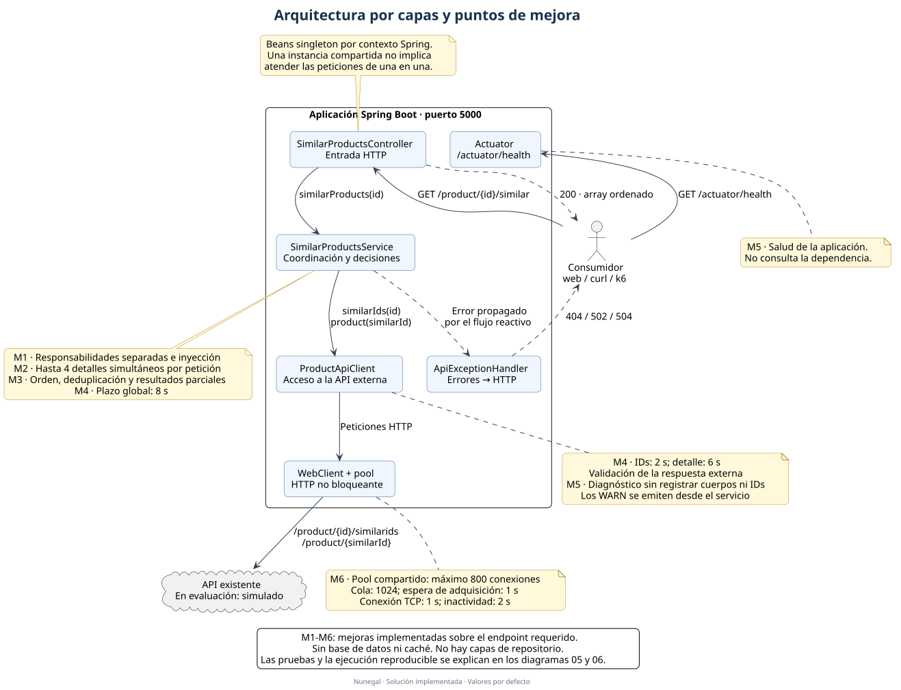
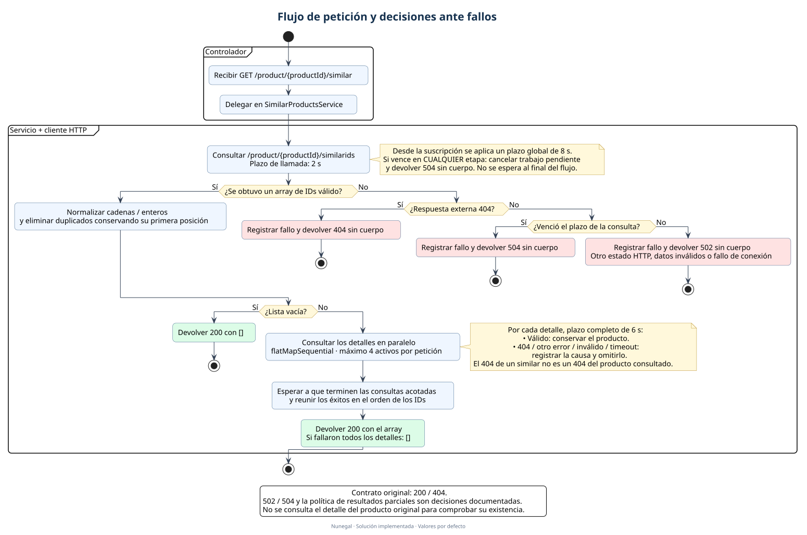
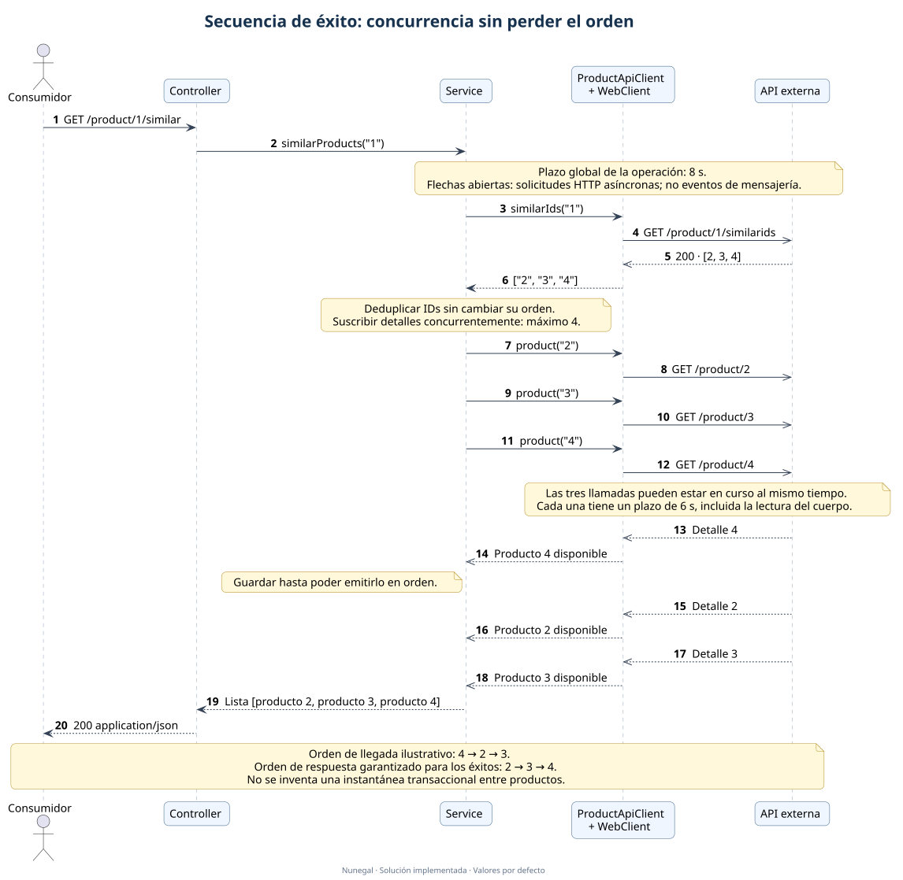
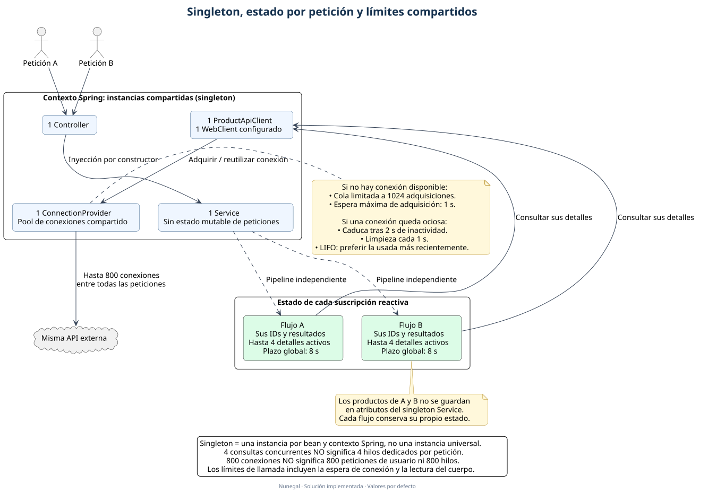
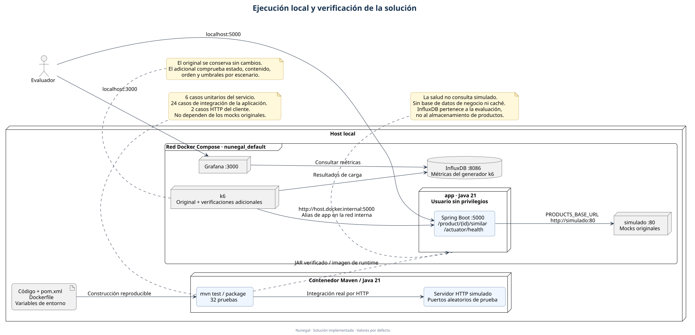
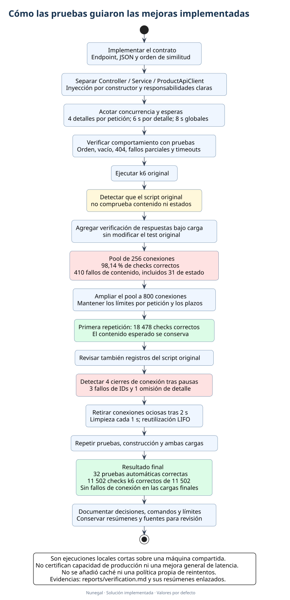

Seis diagramas PlantUML basados en el código implementado. Recorre el flujo, las decisiones ante fallos y las mejoras verificadas. Los valores mostrados son los configurados por defecto.
Guía de lectura y referencias al código · Informe de pruebas
Dónde se sitúa cada componente y qué mejoras aporta. Las notas M1–M6 se explican en la guía.

Desde la entrada HTTP hasta el resultado. El plazo global puede interrumpir cualquiera de las etapas.

Un ejemplo ilustrativo: los detalles llegan 4, 2, 3, pero el consumidor recibe 2, 3, 4.

Las instancias se comparten; los datos de cada petición permanecen en su propio flujo reactivo.

Distingue la aplicación, los mocks, el servidor de integración y los servicios de métricas.

De la saturación y los cierres de conexiones a una ejecución final con todos los checks correctos.
